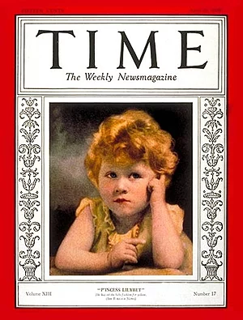
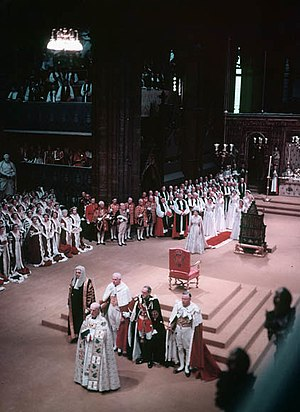
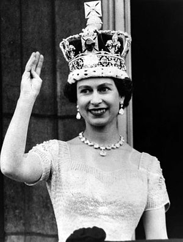

Єлизавета народилася в Мейфері (Лондон) як перша дитина герцога і герцогині Йоркських (пізніше король Георг VI і королева Єлизавета). Її батько зійшов на престол у 1936 році після зречення престолу своїм братом, корони Едуарда VIII, що зробило Єлизавету імовірною спадкоємицею. Здобула приватну освіту вдома та розпочала виконання державних обов'язків під час Другої світової війни, служачи у жіночому допоміжному територіальному корпусі. У листопаді 1947 року вона вийшла заміж за Філіпа Маунтбеттена, колишнього принца Греції та Данії; їхній шлюб тривав 73 роки до його смерті у квітні 2021 року. У пари було четверо спільних дітей: Чарльз, король Сполученого Королівства; Анна, принцеса; принц Ендрю, герцог Йоркський; і принц Едвард, граф Вессекський.
Після смерті її батька в лютому 1952 року Єлизавета, якій тоді було 25 років, стала королевою семи незалежних країн Співдружності: Великої Британії, Канади, Австралії, Нової Зеландії, Південної Африки, Пакистану та Цейлону (сьогодні відомого як Шрі-Ланка), а також Главою Співдружності. У країнах Співдружності націй її представниками були генерал-губернатори, яких вона призначала. Єлизавета правила у статусі конституційного монарха протягом великих політичних змін, як то конфлікт у Північній Ірландії, деволюція у Сполученому Королівстві, деколонізація Африки, а також вступ Сполученого Королівства до Європейських Співтовариств і вихід з Європейського Союзу. Кількість її територій змінювалася з часом, коли території отримували незалежність, а деякі володіння ставали республіками. Її численні історичні візити і зустрічі включають державні візити до Китаю в 1986 році, Росії в 1994 році, Республіки Ірландія у 2011 році, а також візити до п'яти пап.
Серед важливих подій її правління — коронація Єлизавети у 1953 році та святкування її срібного, золотого, діамантового та платинового ювілеїв у 1977, 2002, 2012 та 2022 роках відповідно. Єлизавета була британським монархом з найдовшим життям і найдовшим правлінням, найстарішим і найдовше правлячим главою держави, а також другим за тривалістю правління суверенним монархом у світовій історії. Час від часу вона стикалася з республіканськими настроями та критикою її родини у ЗМІ, особливо після розпаду шлюбів її дітей, її annus horribilis у 1992 році та смерті її колишньої невістки Діани, принцеси Уельської у 1997 році. Проте підтримка монархії у Сполученому Королівстві залишалася незмінно високою, як і її особиста популярність. Єлизавета померла 8 вересня 2022 року.
Народження та ранні роки
Принцеса «Лілібет» на обкладинці журналу «Time»
Єлизавета народилася на Бретон-Стріт, 17 у Лондоні 21 квітня 1926 року в родині принца Альберта, герцога Йоркського, та герцогині Йоркської (Єлизавети Боуз-Лайон, майбутньої королеви-матері). Її хрещення в Музичній кімнаті Букінгемського палацу провів Космо Ленг, архієпископ Йоркський 29 травня того ж року. Хрещеними батьками принцеси були: Георг V, королева Мері, принцеса Мері, граф Стратморський, герцог Конноутський та леді Елфінстоун. Свої імена вона отримала на честь матері, королеви Олесандри — прабабусі по батьківській лінії та королеви Мері — бабусі. У родині її називали пестливим ім'ям «Лілібет» (Lilibet). Як онука короля по чоловічій лінії отримала титул британської принцеси — її Королівська Високість принцеса Елізабет Йоркська. На момент свого народження займала третє місце в порядку престолонаступництва, після дядька Едуарда — принца Уельського та батька — герцога Йоркського, молодшого брата — принца Уельського. На той час ніхто не вважав її майбутньою королевою.
Єлизавета росла, оточена любов'ю та піклуванням рідних. Отримала домашню освіту, в основному з гуманітарним нахилом. Її гувернанткою була Меріон Кроуфорд, відома як «Crawfie». Вона вивчала історію під керівництвом С. Г. К. Мертена з Ітона та сучасні мови, особливо французьку. Релігійне навчання проводив архієпископ Кентерберійський.
Спадкоємиця престолу
Король Едуард VIII зрікся престолу, королем став батько Єлизавети, який узяв собі ім'я Георга VI. У такий спосіб принцеса Єлизавета стала спадкоємицею за припущенням (Heiress presumptive). Вона не отримала титули герцогині Корнуельської та принцеси Уельської через те, що якби в королівській сім'ї народився хлопчик, то він став би попереду принцеси в черзі на престолонаступництво.
Друга світова війна
Друга світова війна почалася, коли принцесі Єлизаветі виповнилося тринадцять років. Її з молодшою сестрою Маргарет евакуйовано до Віндзору. Розробляли також плани евакуації принцес до Канади, але, як відомо, їхня мати — королева Єлизавета заявила: «Діти нікуди не можуть їхати без мене, я ніколи не залишу короля, а король ніколи не залишить своєї країни». У той час принцеса організовувала пантоміми із дітьми персоналу Королівського дому у Віндзорі, а у 1940 році вона зробила своє перше радіозвернення під час Дитячої години Бі-Бі-Сі, в якому зверталася до евакуйованих дітей. У тринадцять років познайомилася з Філіпом Маунтбаттеном, кадетом Дартмутського військово-морського училища, сином грецького принца Андрія, закохалася в нього і підтримувала з ним листування протягом його служби в Королівському флоті.
У 1945 році Єлизавета вмовила батька дозволити їй зробити свій безпосередній внесок у перемогу. Вона приєдналася до Жіночої Допоміжної Територіальної Служби, де вивчилася на водійку та була відома як № 230873 лейтенант Елізабет Віндзор. Це стало першим випадком в історії королівської родини, коли жінка служила у військовому підрозділі.
Післявоєнне життя
Єлизавета здійснила перший закордонний візит у 1947 році, із батьком відвідавши Південну Африку. На честь свого повноліття, коли їй виповнився 21 рік, виступила із радіозверненням до Співдружності та Британської імперії:«Я проголошую перед вами, що все моє життя, буде воно довгим чи коротким, має бути присвячене служінню вам і нашій великій імперській сім'ї, до якої ми всі належимо».
20 листопада 1947 р. Єлизавета одружилася з герцогом Единбурзьким Філіпом (при народженні принцом Грецьким і Данським), своїм чотириюрідним братом (як і Єлизавета, він праправнук короля Данії Кристіана IX); Філіп також є праправнуком королеви Вікторії. Багато хто виступав проти одруження через те, що принц Філіп був православним, не мав грошей, а його сестри одружилися з німецькими принцами, які були прихильниками нацистів. Мати Єлизавети також була проти і навіть, як свідчать останні біографії, називала Філіпа «гуном».[джерело?] Після одруження резиденцією герцога і герцогині став Кларенс-гаус, але з 1946 до 1953 р. герцог Единбурзький перебував в основному на Мальті, де проходив службу як офіцер Королівського флоту. Принцеса Єлизавета жила з ним з 1949 до 1951 року на Мальті, оселившись на віллі Гуардаманджа, яку близько 1929 року придбав лорд Маунтбаттен Бірманський.
14 листопада 1948 року народила першу дитину — принца Чарльза. Раніше, спеціальною відкритою грамотою, король дарував право дітям герцога Единбурзького та принцеси Єлизавети, герцогині Единбурзької, іменуватися принцами. 15 серпня 1950 року народила другу дитину — принцесу Анну.
Королева
Здоров'я її батька протягом 1951 року погіршувалось і Єлизавета почала виконувати деякі його офіційні обов'язки. Того ж року вона відвідала Грецію, Італію, Мальту. У жовтні здійснила поїздку до Канади та відвідала президента США Гаррі Трумена. У січні 1952 року принцеса з герцогом Філіпом здійснила тур Австралією та Новою Зеландією, повернувшись через Африку. Новина про смерть короля Георга VI 6 лютого 1952 року від раку легенів застала їх у Кенії.
Коронація Єлизавети II
Єлизавета II після коронації в 1953 році Королева перебувала в готелі «Трітопс Готел» неподалік Найробі, коли їй повідомили про смерть батька. Це було вперше після Якова I, коли монарх успадкував престол, перебуваючи поза межами Великої Британії. У час, коли їй повідомили про смерть, вона збиралася обідати з сером Горасом Герном, головою Верховного Суду Кенії, який пізніше супроводжував королівське подружжя до Великої Британії. Коли Асистент і Особистий секретар нової королеви спитав, як вона хоче, щоб її називали, то вона відповіла: «Єлизавета, звичайно».
Проголошення її королевою Таємною радою Великої Британії відбулося у вівторок 7 лютого 1953 року у Сент-Джеймському палаці. У Канаді окреме проголошення було зроблене Таємною радою у Канаді того ж дня. 24 березня 1953 року, незадовго до коронації, від раку померла її бабуся — королева Мері. Як повідомлялось, її останньою волею було, щоб через траур коронацію не відкладали.
Сама коронація, яку вважають однією з найпишніших в історії, відбулась 2 червня 1953 року у Вестмінстерському абатстві. Це була перша коронація, що транслювалась телебаченням, хоча спочатку ідея телетрансляції мала багато противників, які вважали, що вона порушить сакральність моменту.
19 лютого 1960 року королева народила третю дитину — принца Ендрю, герцога Йоркського, а 10 березня 1964 року — принца Едварда, графа Ессекського.
Офіційною резиденцією королеви був Букінгемський палац, але, за повідомленнями, їй був більше до вподоби Віндзорський замок. Крім того, її резиденціями були Голірудгауз в Единбурзі, Балморал та Сандрингемський палац.
Єлизавета ІІ померла 8 вересня 2022 року в шотландському замку Балморал у 96-річному віці. У заяві Букінгемського палацу йдеться: «Королева мирно померла в Балморалі сьогодні вдень»[1]. В останні місяці повідомлялося про погіршення її здоров'я, через яке їй було важко пересуватися. У результаті цього вона не була присутня на низці заходів[11][12].
Правління
Аж до своєї смерті королева була однією з найпопулярніших осіб Великої Британії. За різними опитуваннями, її підтримували близько 80 % підданих. Хоча справа принцеси Діани на деякий час похитнула популярність Єлизавети і авторитет монархії, але в довготривалій перспективі, як видно з досліджень громадської думки, не позначилася на ньому.
З 17:30 9 вересня 2015 року королева стала монархом, який в історії Великої Британії правив найдовше. Попередній рекорд належав королеві Вікторії, яка правила в країні 63 роки, 226 днів, 16 годин та 23 хвилини[13] у період з 1837 до 1901 року. На момент смерті 8 вересня 2022 року правління Єлизавети II тривало 70 років та 214 днів.
Відвідини українського музею просто неба в Канаді
У 1984 році відвідала скансен «Село україно-канадської культурної спадщини» неподалік Едмонтона (Альберта) - музей просто неба, розташований за 80 км на схід від міста Едмонтон в екокультурній території Калина Кантрі, який, завдяки перевдягнутим відповідно епосі працівників-акторів (heritage interpreters[en]), відтворює життя й побут першопрохідців у східно-центральній Альберті. У ньому демонструється побут українців Канади між роками 1892–1930: автентичні хати й домівки цих українських колоністів-першопоселенців перевезено з околиць у музей — і поетапно реставровано відповідно епосі початку XX сторіччя. «Село», як його частіш прийнято по-простому називати, приділяє велику увагу історичній автентичності і концепції відтворення живої історії. У «Селі» користуються методикою розповіді від першої особи, яка вимагає, щоби костюмовані працівники були ретельно підібрані й перебували в характері весь час (або якомога більше). Актори відповідають на запитання відвідувачів так, ніби останні і зараз опинились у 1928 році: інколи цей метод збиває з пантелику відвідувачів села-музею, проте він дозволяє їм заглиблюватись вірніш у дух і часи відтвореної історичної епохи.
Візити
Королева Єлизавета II найчастіше з монархів в історії Британії подорожувала. У 1953–1954 роках вони з Філіпом здійснили піврічну навколосвітню подорож, ставши першим британським королівським подружжям, що обпливло земну кулю. Єлизавета стала першим панівним монархом Австралії, Нової Зеландії та Фіджі, що побувала там. У 1957 році вона перебувала з державним візитом у США та здійснила тур Канадою, де відкрила 23-тю сесію канадського парламенту. Також виступила з промовою на засіданні Генеральної Асамблеї ООН. У 1959 році королева здійснила ще один тур Канадою і вже як королева Канади відвідала США. У лютому 1961 року вона відвідала Туреччину на запрошення президента Кемаля Гюрселя, а пізніше — вперше Індію та Пакистан. Єлизавета II побувала в більшості європейських країн (в тому числі — Росії, Литві, Латвії та Естонії) та багатьох неєвропейських. У 2011 році королева вдруге зробила промову на зібранні асамблеї ООН. Цього ж року вона стала першим британським монархом, який відвідав незалежну Ірландію.
Роль у Співдружності
Британська імперія почала еволюціювати ще з часів Декларації Бальфура, проголошеної на Імперській Конференції 1926 року і формалізованої в декларації Вестмінстерського статуту 1931 року. У часи правління королеви Єлизавети II завершився розпад Британської Імперії і повністю формалізувалася Співдружність націй, яка об'єднала більшість колишніх британських володінь. Тепер головною роллю голови Співдружності, якою була королева, стала необхідність підтримувати зв'язки країн Співдружності між собою та з колишньою метрополією. Королева часто грала важливу роль у відновлені порушених відносин із країнами Співдружності та згладжуванні протиріч.
У 2007 році були виявлені секретні документи, що свідчать про те, що в 1956 році французький прем'єр Гі Молле та британський прем'єр Ентоні Іден обговорювали можливість союзу Великої Британії та Франції. При цьому не виключалося, що Єлизавета II могла стати главою держави у Франції.
Політична роль
Як конституційний монарх, Єлизавета II не мала висловлювати публічно свої політичні симпатії чи антипатії. Вона завжди дотримувалася цього правила, діючи непублічно, через що її політичні погляди нез'ясовані. Однак існують свідчення, що королева схилялася до точки зору так званої «Однієї нації». Під час урядування Маргарет Тетчер було відомо, що королеву турбувало те, що її політика може призвести до серйозних соціальних проблем. Відомо, що Маргарет Тетчер якось сказала: «Проблема в тому, що королева належить до того типу жінок, які можуть проголосувати за соціал-демократичну партію».
Канадська національна єдність
Ніколи не висловлюючись прямо проти суверенітету Квебеку, Єлизавета часто підкреслювала необхідність єдності канадської нації. Вона також часто наголошувала на своїй увазі до Канади. Наприклад, повертаючись з Каліфорнії у 1983 році, королева сказала: «Я їду додому, в Канаду, завтра» та на обіді в Саскачевані (2005): «Ця країна і канадці завжди присутні в моєму житті і моїй роботі».
У промові до Квебекської Національної Асамблеї у розпал Тихої революції в 1964 року королева ігнорувала національні протиріччя і говорила про «дві взаємодоповнювальні одна одну культури», кажучи: «Я радію від думки,що в нашій Співдружності існує країна, де я можу офіційно висловлюватись французькою». Після проголошення Конституційного Акту 1982 року, який був єдиною в канадській історії важливою конституційною зміною, що була прийнята без згоди уряду Квебеку, Єлизавета намагалася продемонструвати свою роль голови всієї канадської нації і публічно виражала жаль від того, що Квебек не брав участі в формуванні канадської державної структури.
У 1995 році під час кампанії за відділення Квебеку вона протягом чотирнадцяти хвилин говорила (англійською та французькою) з діджеєм П'єром Брассардом з монреальського радіо CKOI-FM, який видавав себе за канадського прем'єр-міністра Жана Кретьєна. Під час цієї розмови він сказав королеві, що начебто прихильники відділення лідирують, на це вона відповіла, що «відчувала, що референдум піде неправильним шляхом», і додала: «Якщо я можу якось допомогти, я готова допомогти». Однак при цьому вона категорично відмовилась втручатись до чіткого роз'яснення ситуації. Під час референдуму Єлизавета II перебувала в дорозі до Нової Зеландії і попросила свого пілота не вилітати з Лос-Анджелеса, поки не будуть оголошені результати референдуму.
Роль в уряді
Формально королеві належала законодавча, виконавча і судова влада в державах, які вона очолювала, але фактично її роль скоріше церемоніальна через те, що вона завжди діяла за порадою Кабінету міністрів, а прем'єр-міністром найчастіше призначала голову партії, що перемагає на виборах. Іноді монарх може призначити прем'єра, який має сформувати уряд на основі абсолютної більшості в Палаті громад, але така практика застосовується лише в критичних ситуаціях (востаннє — у 1940 році, коли король Георг VI призначив прем'єр-міністром Вінстона Черчилля). Тричі під час свого правління Єлизавета мала конституційні проблеми з формуванням британського уряду. 1957 та 1963 року, за відсутності чіткого механізму обрання лідера в Консервативній партії, саме королева мала вирішити кому доручити формування уряду після відставок сера Ентоні Ідена та Гарольда Макміллана. У 1957 році Ентоні Іден відмовився радити королеві, кого призначити його наступником, і вона звернулася за порадою до лордів Солсбері та Кілмура і Вінстона Черчилля, як єдиного з живих на той час консервативного прем'єра (згідно з прецедентом, за яким після відставки Ендрю Бонара Лоу в 1923 році король Георг V радився з батьком лорда Солсбері та колишнім прем'єром Артуром Бальфуром). У 1963 році Гарольд Макміллан сам радив призначити своїм наступником Алека Дуглас-Хоума. У 1974 році, після відставки Едварда Гіта через неясний результат виборів, Єлизавета II призначила прем'єр-міністром лідера опозиції Гарольда Вільсона. Його уряд меншості протримався близько восьми місяців.
У всіх цих випадках королева діяла відповідно до британської конституційної традиції, за якою вона повинна не приймати ніяких важливих рішень без поради своїх міністрів і таємних радників. Британські прем'єри зустрічалися з королевою щотижня, до чого ставляться дуже серйозно. Один з прем'єр-міністрів навіть сказав, що до зустрічей з королевою він готується серйозніше, ніж до засідань парламенту, тому що королева обізнаніша в більшості питань. Крім того, королева мала постійні зустрічі з іншими міністрами та прем'єрами держав Співдружності, коли вони перебувають у Великій Британії. Також під час свого перебування в Шотландії вона зустрічалася з першим міністром Шотландії. Міністерства та дипломатичні представництва Великої Британії надсилали їй регулярні звіти.
Хоча заведено, що королева не втручається в політику, але через те, що за своє довге правління вона мала можливість працювати з багатьма прем'єрами та лідерами інших країн, до її порад завжди ставилися уважно. У своїх мемуарах Маргарет Тетчер писала про свої щотижневі зустрічі з королевою Єлизаветою: «Кожен, хто думає що вони [зустрічі] — проста формальність або соціальна умовність, глибоко помиляється. Насправді вони проходять в спокійній діловій атмосфері, і Її Величність завжди демонструє свою здатність охоплювати широке коло проблем і свій великий досвід».